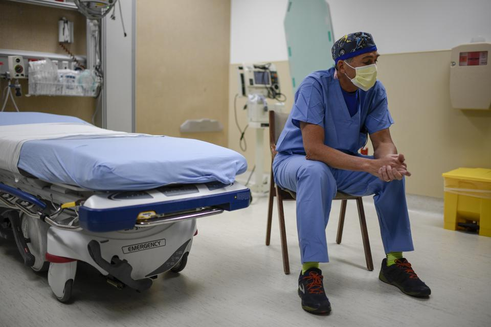

600 врачей утверждают, что локдаун — это «инцидент с массовыми жертвами»

На этой неделе более 600 американских врачей направили президенту Трампу письмо, в котором назвали локдаун 'инцидентом с массовыми жертвами' и с 'экспоненциально растущими негативными последствиями для здоровья' для миллионов пациентов, не страдающих COVID-19.
'О косвенных последствиях для здоровья сообщается мало и они очень сильно недооцениваются.Это очень большая ошибка', — говорится в письме, инициированном Симоной Голд, доктором медицины, специалистом по неотложной медицине в Лос-Анджелесе.
'Количество телефонных звонков на линии самоубийств увеличились на 600%', — говорится в письме.К числу других невидимых жертв можно отнести '150 000 американцев в месяц, у которых был бы обнаружен рак при обычном обследовании'.
От пропущенного диагноза рака до необработанных инфарктов и инсультов и до повышенного риска самоубийств: 'Мы встревожены тем, что на здоровье наших пациентов в будущем не обращается должного внимания'.
Пациенты, опасающиеся посещать больницы и кабинеты врачей, умирают, потому что ковидофобия мешает им обращаться за медицинской помощью.Число обращений по поводу тяжелых сердечных приступов в девяти обследованных больницах США, с марта сократилось почти на 40%.Кардиологи обеспокоены 'второй волной смертей', косвенно вызванной вирусом.
Письмо врачей основное внимание уделяет физическому и психическому здоровью американцев.'Миллионы жертв продолжающегося локдауна останутся незаметными, последствия отключения будут называть алкоголизмом, бездомностью, самоубийством, инфарктом, инсультом или почечной недостаточностью.В случае молодежи это будет называться финансовой нестабильностью, безработицей, отчаянием, наркоманией, незапланированной беременностью и бедностью'.
'Невозможно преувеличить кратковременный, среднесрочный и долгосрочный вред здоровью людей, наносимый локдауном', — говорится в письме.'Потеря работы — одно из самых стрессовых событий в жизни, и влияние на здоровье человека не уменьшится от того, что работу потеряли еще 30 миллионов (теперь 38 миллионов) других людей.Закрытие школ и университетов пагубно скажется на детях, подростках и молодых людях на десятилетия вперед'.
В то время как все 50 штатов в некоторой степени снимают ограничения, некоторые местные чиновники угрожают сохранить локдаун до августа.Многие школы и университеты говорят, что они будут оставаться закрытыми до конца 2020 года.
'Окончание локдаунов не связано с Уолл-стрит или пренебрежением к жизни людей; это касается спасения жизней', — сказала доктор Мэрилин Синглтон, калифорнийский анестезиолог и один из тех, кто подписал письмо.'Мы не можем допустить, чтобы эта болезнь превратила США из свободного, энергичного общества в общество потерянных душ, зависящих от правительственной заботы'.Она ведет блог, посвященный ущербу, который нездоровая реакция на вирус наносит самим основам общества.
Доктор Джейн Ориент, исполнительный директор Ассоциации американских врачей и хирургов, также предупреждает, что локдауны оказывают огромное негативное влияние на пациентов, не страдающих COVID.
'Пациенты, которые попадают в больницу, скажем, из-за проблем с сердцем, фактически являются заключенными.Никто не может находиться вместе с ними.Посещение больницы проходит через закрытое окно, по телефону' — написала она нам.'Чтобы получить разрешение подойти к окну, вы должны записаться на прием (только одна группа из двух человек в день!), надеть маску, измерить температуру и получить значок посетителя соответствующего дня'.
Сколько случаев COVID-19 предотвращается этими методами?'Ноль', — говорит доктор Ориент.Но 'ухудшение морального состояния пациента, потеря контроля за медицинской помощью, особенно ночью, не поддается исчислению'.
Практически во всех больницах были приостановлены 'факультативные' процедуры, чтобы сделать койки доступными для ожидаемого потока пациентов с COVID-19.Койки оставались пустыми, не принося пользы пациентам и приводя к огромным финансовым проблемам больниц, особенно с ограниченными резервами.
Даже такие штаты, как Нью-Йорк, где были жесткие ограничения, начинают разрешать отдельные больничные процедуры в некоторых регионах.Но это больше похоже на переключение ближнего и дальнего света в автомобиле.В Пенсильвании председатель Института сердца Гейзингера д-р Альфред Касале заявил, что открытие будет медленным, пока объект будет перенастроен на социальное дистанцирование COVID-19 и улучшенную гигиену.
Вернутся ли пациенты?Ковидофобия смертельно реальна.Пациенты все еще боятся идти в больницы с сердечными приступами и даже со сломанными костями и глубокими порезами.Несмотря на героические усилия врачей по глубокой дезинфекции своих кабинетов, миллионы людей отменили приемы и пропустили инфузионную терапию и даже химиотерапию.Ожидается, что отсрочка медицинской помощи приведет к тому, что пациенты будут в худшем состоянии, когда обратятся за медицинской помощью, и к большему числу смертей у пациентов, не получивших лечения от инсульта, сердечных приступов и т. д.
NPR сообщила о жителе штата Вашингтон, которая ждала почти неделю, прежде чем отправиться в больницу, где врачи обнаружили, что у нее было мозговое кровотечение, которое уже не лечилось.Она пережила несколько приступов и умерла.'Мы могли бы предотвратить такое развитие событий', — говорит ее нейрохирург, доктор Абхинет Чоудхари, директор Института нейробиологии Overlake в Белвью, штат Вашингтон.
Поскольку число смертей от вируса начинает снижаться, мы, вероятно, столкнемся с новой волной жертв от локдауна, о которой предупреждают 600 врачей.Мы должны прислушиваться к врачам и следовать их советам.
ОБНОВЛЕНИЕ: Доктор Симона Голд инициировала письмо, подписанное 600 врачами, движимая страстной заботой о миллионах пациентов, которые не получают медицинской помощи.Некоторые критики в Твиттере ссылались на статью Associated Press, которая дискредитировала ее работу, утверждая, что это была попытка 'противостояния' республиканцев.Неправда.'Это была на 100% инициатива врачей', — сказал нам доктор Голд.
Перевод: Наталия Афончина
Редактор: Владимир Золоторев
Posted On: 2020-05-27T21:52:00
Content Date: 2020-05-27
Download Date: 2021-05-13
Document ID: L0C04C0AX